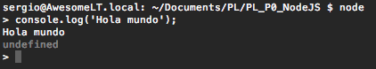

Para obtener el paquete de instalación de Node.js nos dirigimos a la sección de descargas de su página web donde podremos descargar un instalador (http://nodejs.org/download/) que realizará la instalación en sencillos pasos.
Podemos lanzar una sesión de Javascript con el comando node en la consola:
node
